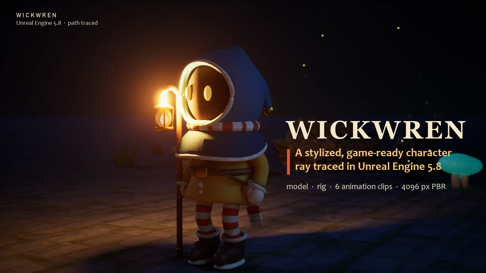

3D character / Unreal Engine 5, path traced
Wickwren
A hooded lantern-keeper built from scratch: model, 33-bone rig and six animation clips, delivered as a game-ready FBX pack. Key poses plus procedural animation, no mocap and no generative AI. The video is rendered in Unreal Engine 5 with path tracing.
- Unreal Engine 5
- Blender
- Rigged + 6 clips
- FBX pack